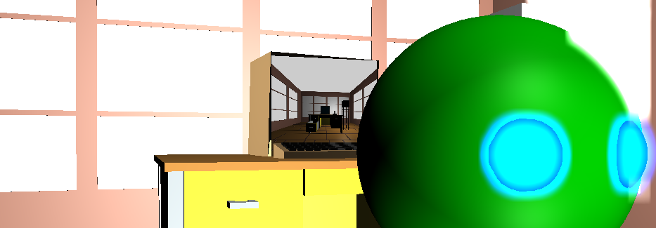
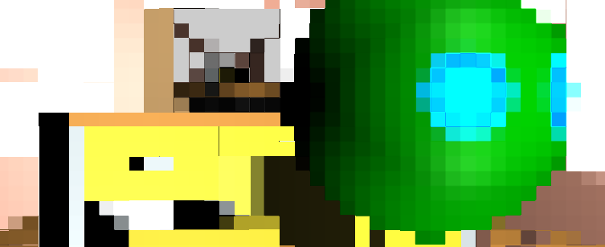
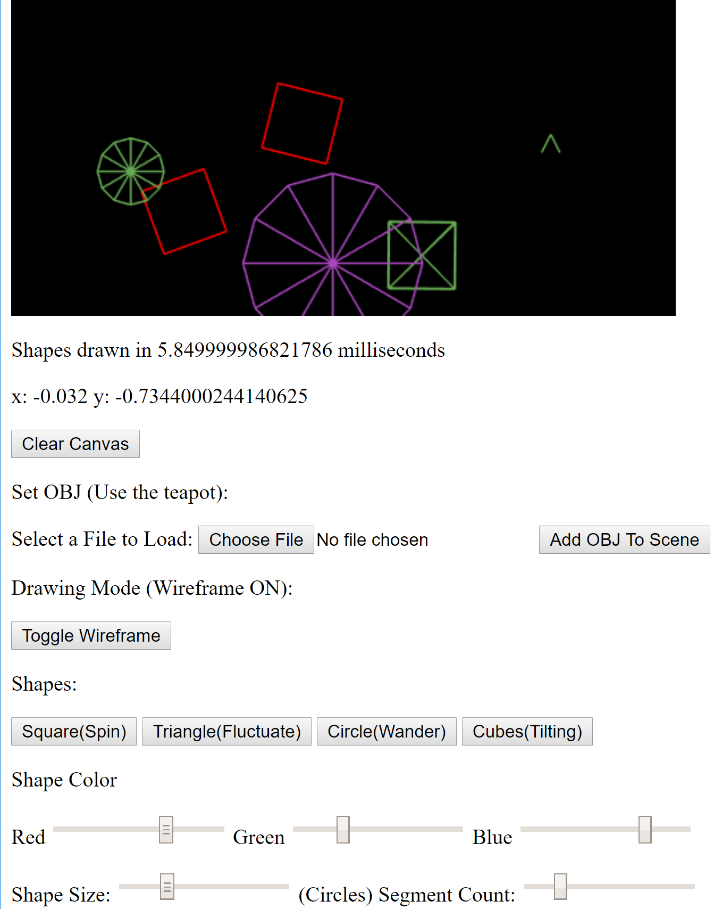
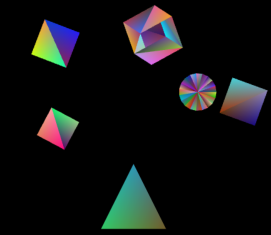
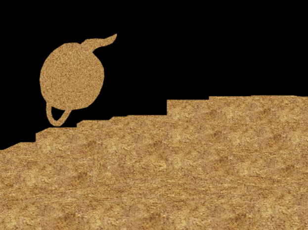
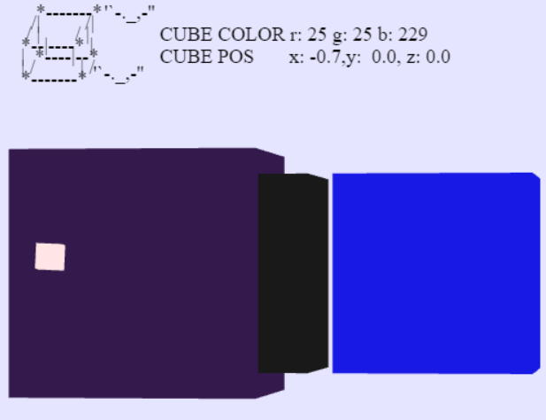
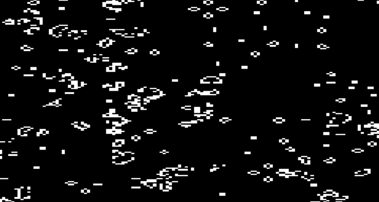

Graphics Programming • WebGL • Three.js • GLSL
Graphics & Systems
GLSL — Pixelation Shader
A GLSL post-processing pixelation shader implemented in WebGL. Inspired by the classic censor blur seen on broadcast TV. The user controls the blur intensity via a slider, dynamically updating the shader uniforms in real time.



WebGL — Interactive Examples
View on GitHub →Browser-based interactive 3D demos covering rotation, translation, texturing, camera control, field-of-view adjustment, ray-casting, and interactive object selection. Each example is self-contained and runs directly in the browser using raw WebGL.





Three.js — Interactive Examples
View on GitHub →Three interactive Three.js scenes: scene 1 — dynamic lighting and object manipulation; scene 2 — a mouse-movement-driven GLSL fragment shader that reacts in real time to cursor position; scene 3 — Conway's Game of Life running as a shader inside a Three.js renderer.

